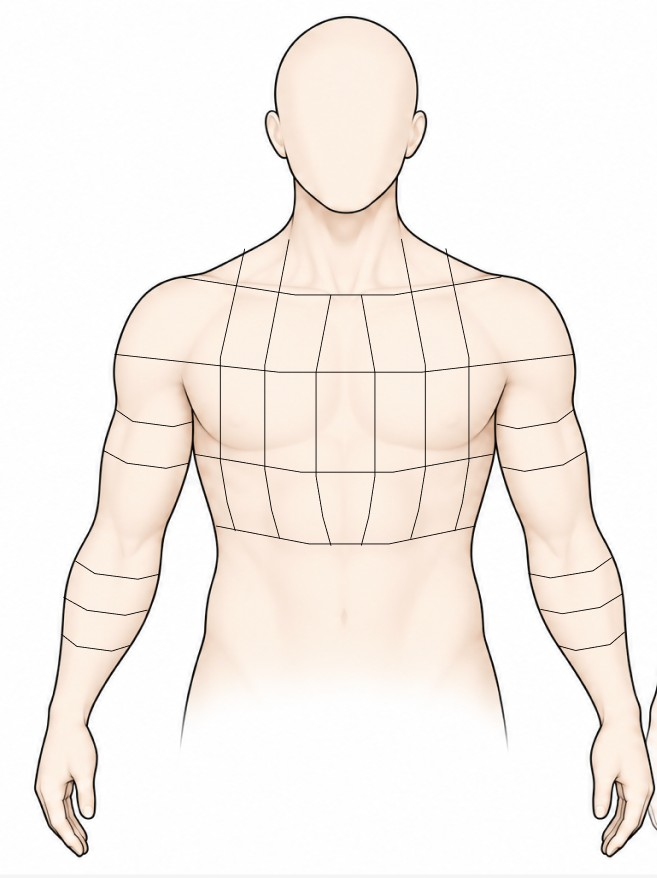
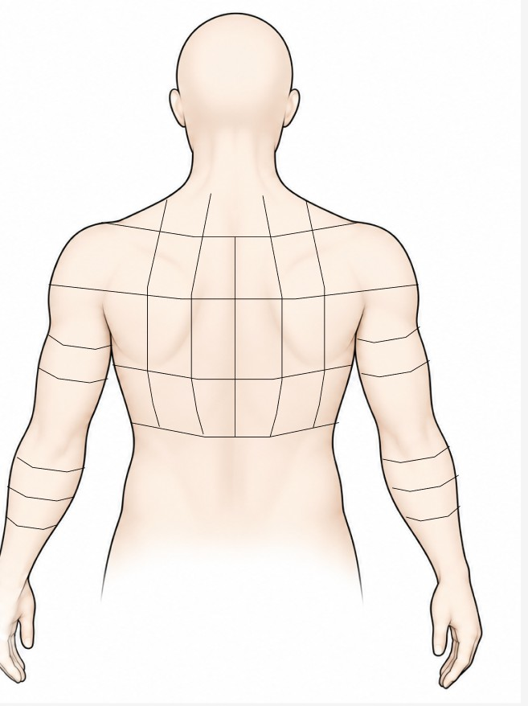

1 説明 / Instructions2 刺激・最初の身体感覚 / Stimulus & first sensation3 身体マップ / Body map4 質問 / Questionnaire
参加者 ID Participant ID
言語を選び、研究担当者から案内された参加者 ID を入力してください。Select your language and enter the participant ID provided by the researcher.
実験の説明Experiment Instructions
この調査は二つの部分で構成されています。Section A では音楽と物語、Section B では社会的接触の映像を扱います。音楽は Section A のみに含まれます。ヘッドホンまたはイヤホンの使用をおすすめします。所要時間は全体で 30 分以内です。This study has two parts: Section A uses music and stories, and Section B uses social-touch videos. Music is included only in Section A. Headphones or earphones are recommended. The total study should take no more than 30 minutes.
本実験では、刺激を通じてご自身に生じる感情や身体感覚を調べます。このセクションで、実際に感じたことを回答してください。This study examines your own emotions and bodily sensations in response to stimuli. Please report your actual experience in this section.
A
音楽・物語Music & Stories
音楽4曲と物語4編を通じて、ご自身に生じた感情と、それに伴う身体感覚をご記録ください。Report your own emotions and associated bodily sensations in response to four music clips and four stories.
身体感覚が生じなかった場合も、そのまま回答できます。You can continue even if you experience no bodily sensations.
音楽を聴いてください Listen to the music
感情に伴う身体感覚を初めて感じたら、最初に感じた側面を選択してください。When you first notice a bodily sensation associated with an emotion, select the side where you felt it first.
物語Story
最初に感じた側面Side first felt
前側 / Front

後側 / Back

音楽によって呼び起こされた感情を感じたとき、身体のどこでどのような感覚があったかを描いてください。赤は感覚の増加・活性化、青は減少・不活性化を表します。特に感じない場合は空白のままで構いません。Draw where and how you felt bodily sensations associated with the emotions evoked by the music. Red indicates increased/activated sensation; blue indicates decreased/deactivated sensation. Leave the map blank if nothing is noticeable.
刺激を通じて感じた気分を、二つの尺度で評価してください。Rate how you felt in response to the stimulus on the two scales.
スライダーを操作して、1〜9から選んでください。Move each slider to select a value from 1 to 9.
1：非常に不快Very unpleasant5：中立Neutral9：非常に快Very pleasant
1：非常に落ち着いているVery calm9：非常に興奮しているVery excited
身体感覚の変化に関する質問 Questions about bodily sensation changes
描いた身体マップ / Your body map
前側 / Front
後側 / Back
1. このマップに描いた範囲内で、その感情に伴う身体感覚を感じている間に、感覚の位置は変化しましたか？ Within the area you drew, did the location of sensations change while you were experiencing bodily sensations associated with that emotion?
次元2：各側面内の広がり・方向（複数選択可）Dimension 2: Spread and direction within each side (select all that apply)
以下は位置の変化を示す2種類の例です。強さや速さは表していません。The following show two types of spatial change, not intensity or speed.
↑↑↑↑
広がる / Spread
↓↓↓↓
集まる / Converge
任意：さらに詳しい順序を点で記録しますか？ Optional: Would you like to add a more detailed sequence using points?
経路が不確かな場合はスキップできます。同じ段階で感じた場所を前後の両方に複数クリックできます。次の段階へ進むときは「次のステップ」を押してください。順序を思い出せる範囲で入力し、最後に「完了」を押してください。You may skip this if the path is uncertain. Click multiple locations on either side within the same step, then select “Next step” when the sensation changed. Record only the sequence you can recall, then select “Done”.
ステップ 1 / Step 1
前側 / Front
後側 / Back
0 点 / 0 points
順序の記録が完了しました。次の質問へ進んでください。Sequence recorded. Continue with the remaining questions.
2. その感情に伴う身体感覚を感じている間に、感覚の強さは変化しましたか？ Did the intensity of sensations change while you were experiencing bodily sensations associated with that emotion?
どのような強さの変化がありましたか？（複数選択可） How did the intensity change? (Select all that apply)
実験が終了しました Study complete
ご協力ありがとうございました。回答は研究用データベースに送信されます。Thank you. Your response will be sent to the study database.
送信を準備しています。Preparing your submission.
念のため、回答データを手元にも保存できます。You can also save a local backup copy of your response.